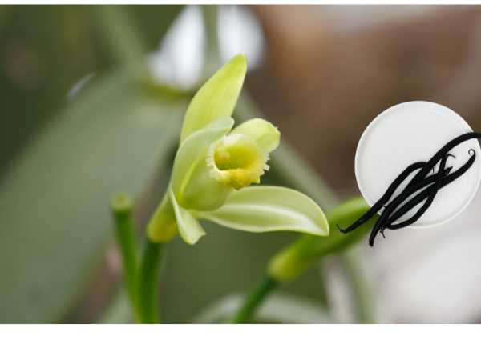

Vanilla planifolia
Common Names: Vanilla, Flat-leaved Vanilla, Bourbon Vanilla
Local Name: Vanilla (Tamil/Hindi), Vaanilla (Malayalam)
Family: Orchidaceae
Origin: Mexico and Central America
Plant Type: Perennial climbing orchid vine
Average Lifespan: 10–12 years in cultivation
| Growth Habit | Climbing vine with succulent stems and aerial roots; can grow 30+ meters in the wild |
| Plant Size | Managed at 1.5–2 meters in cultivation; naturally climbs to 30 meters |
| Leaves | Flat, fleshy, oblong-lanceolate, 8–25 cm long, bright green, succulent |
| Flowers | Pale yellow-green, orchid-type, 5–6 cm diameter; open for only one day |
| Flower Characteristics | Fragrant; must be hand-pollinated outside Mexico (natural pollinator is Melipona bee) |
| Fruit | Long, slender pods (beans) 15–25 cm long; green when unripe, dark brown when cured |
| Root System | Aerial roots along stem nodes for climbing; shallow ground roots for nutrition |
| Climate | Tropical; warm and humid with partial shade |
| Temperature Range | 20–30°C; sensitive to temperatures below 10°C |
| Rainfall Requirement | 1500–3000 mm annually; needs dry period to trigger flowering |
| Soil Type | Well-drained, humus-rich loamy soil; can grow in sandy loam with organic amendments |
| Soil pH Preference | 5.5–7.0 |
| Sun Requirement | Partial shade (50–60% shade); avoid direct harsh sunlight |
| Spacing | 2–3 meters between plants; needs support poles or shade trees |
| Irrigation Method | Drip irrigation; avoid waterlogging; reduce watering before flowering |
| Water Requirement | Moderate; allow slight drying between waterings |
| Can it Grow in Pots? | Yes, in large containers with orchid bark mix and climbing support |
| Fertilizer Schedule | Monthly with balanced orchid fertilizer; high potassium before flowering |
| Recommended Organic Fertilizers | Compost tea, fish emulsion, neem cake, vermicompost |
| Pesticide Frequency | Monthly preventive; more during humid season |
| Recommended Organic Pesticides | Neem oil, copper-based fungicide for root rot prevention |
| Mulching Practice | Organic mulch around base; avoid mulch touching stem |
| Training System | Train vine in a loop (looping method) to keep at manageable height and promote flowering |
| Pruning Time | After harvest; tip pruning to encourage lateral branching |
| How to Prune | Pinch growing tips; loop long vines back down to support; remove dead stems |
| Common Pests | Mealybugs, scale insects, spider mites, slugs |
| Common Diseases | Root rot (Fusarium), stem rot, anthracnose, mosaic virus |
| Disease Prevention & Remedies | Excellent drainage, sterilized tools, avoid overhead watering, remove infected material |
| Flowering Months | January–April (India); triggered by a dry period |
| Fruiting Season | Pods mature 9 months after pollination |
| Days to Harvest | 270–300 days from pollination |
| Harvest Indicators | Pod tip turns yellow; harvest before fully ripe to prevent splitting |
| Average Yield per Plant | 0.5–1.5 kg green beans per vine per year (mature vine) |
| Pollination Type | Hand pollination required outside native range |
| Pollination Notes | Flowers open for only one morning; hand pollinate with a toothpick or small brush |
| Pollination Details | Transfer pollen from anther to stigma using a thin stick; rostellum must be lifted gently |
| Propagation by Cuttings | Stem cuttings of 30–60 cm with aerial roots; plant in well-drained medium |
| Propagation by Seeds | Rarely used commercially; seeds require sterile orchid germination medium |
| Water Usage | Moderate; efficient with drip irrigation under shade |
| Companion Plants | Shade trees like gliricidia, silver oak, areca palm |
| Organic Practices Used | Agroforestry integration; intercropping with shade trees |
| Biodiversity Benefits | Supports pollinators; thrives in agroforestry systems with high biodiversity |
| Commercial Production Regions | Madagascar, Indonesia, India (Kerala, Karnataka), Tahiti, Uganda |
| Market Uses | Vanilla extract, vanilla pods, flavoring for food and beverages |
| Processing Uses | Curing process (blanching, sweating, drying) develops vanillin flavor; used in ice cream, baking, perfumery |
| Market Value (Approx.) | ₹40,000–80,000 per kg cured beans; one of the most expensive spices in the world |
| Symbolism | Symbol of luxury and refinement; the Totonac people of Mexico were the first to cultivate vanilla |
| Traditional Uses | Used by Aztecs to flavor chocolate drinks; introduced to Europe by Spanish conquistadors in the 16th century |
Add your field observations here.